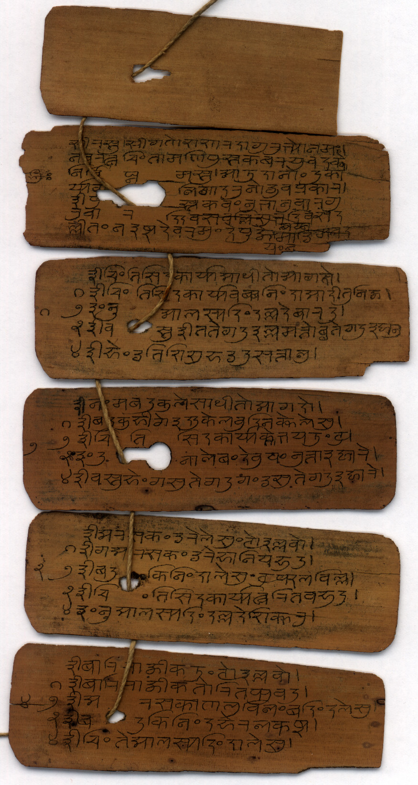
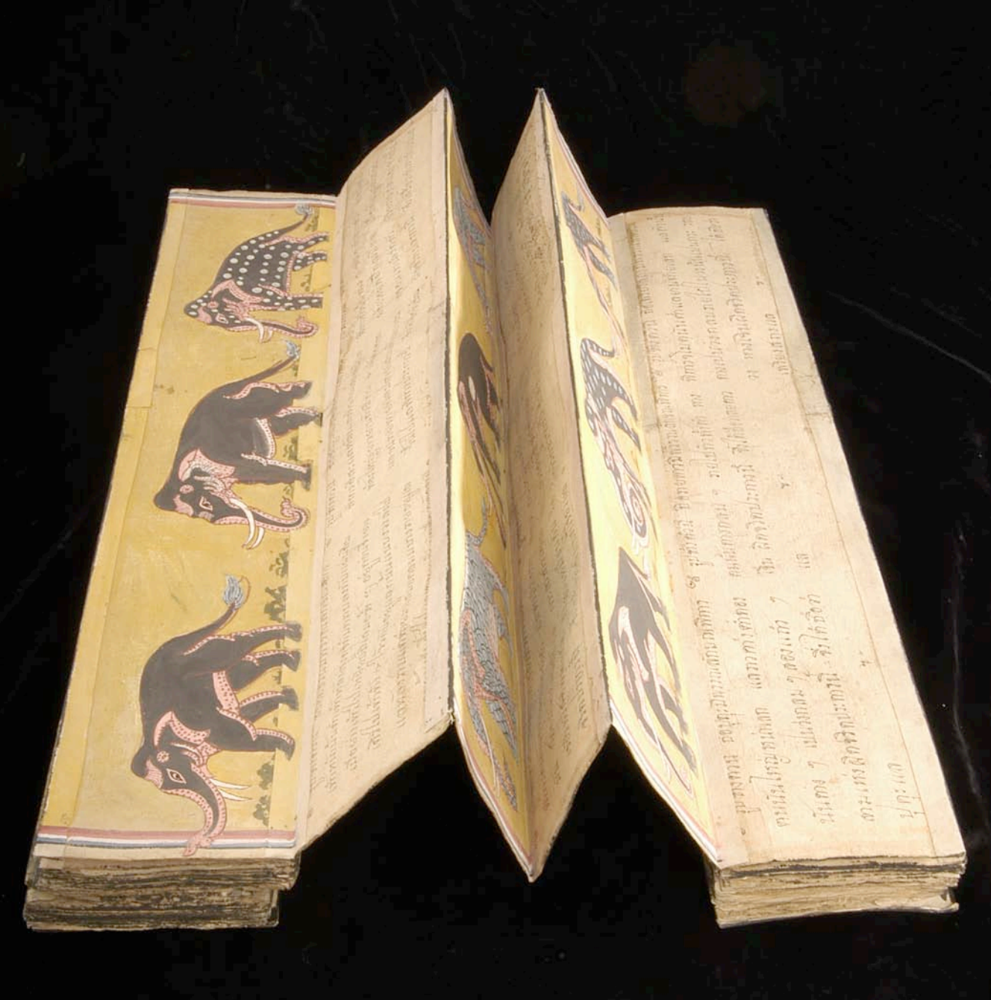
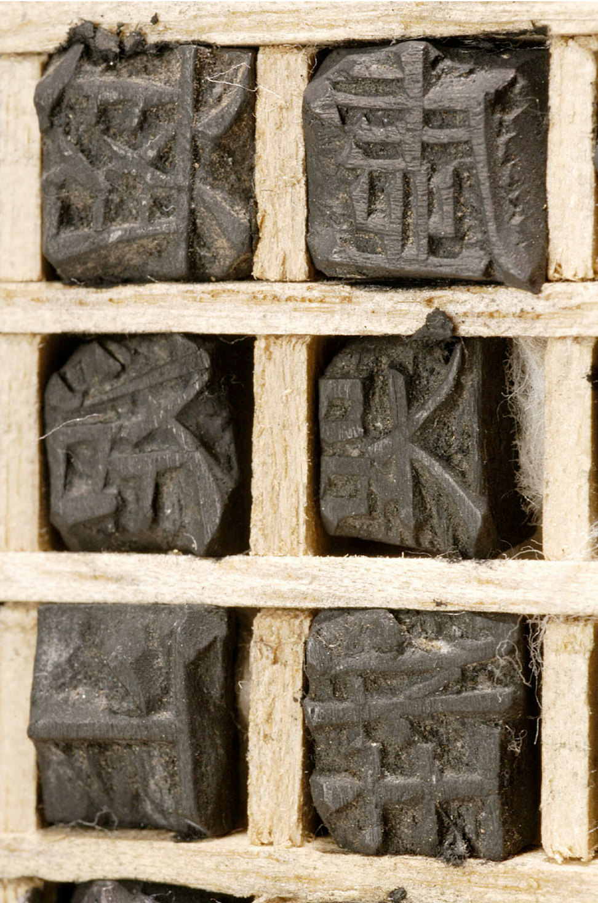
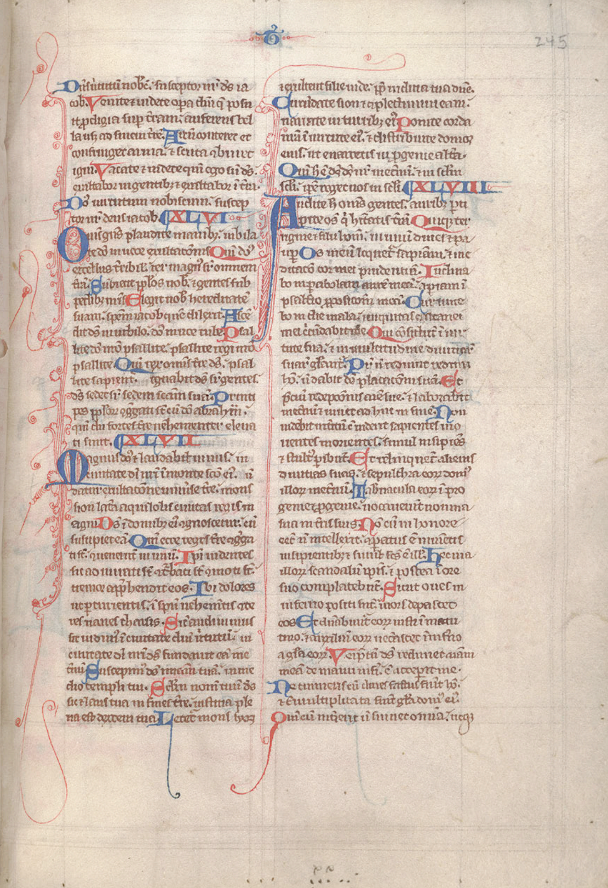

class: middle # Triumph of the Codex: ##### Silent Reading, Manuscript through 1500, Materials and Meanings, Visual Appearance of the Book <hr> #### Matthew J. Lavin #### Clinical Assistant Professor of English and Director of Digital Media Lab #### University of Pittsburgh #### January 2018 --- class: middle # Materials and Meanings <hr> ### "Nature originally provided the surfaces, writing tools, and media for any human communication that sought permanence" (Stoicheff 73) --- class: middle # Materials and Meanings <hr> ### "These writing and ideographic systems were integrated with the immediate natural settings" (Stoicheff 73) --- class: middle # Materials and Meanings <hr> ### "Instead of separate graphic systems such as alphabets, these forms of communication had meaning by virtue of their relationship with oral teachings" (Stoicheff 73) --- class: middle # What Changed by 400 <hr> - ### Hierglyphics: permanence (Stoicheff 74) - ### Clay tablets: erasable, reusable, no labor intensive checked_string_types (Stoicheff 74) - ### Tortoise shell (Stoicheff 75) - ### Wax tablet (Stoicheff 75-76), also discussed by Brown (see Brown 179) - ### Animal skin: improvements made at Pergamum (Stoicheff 76-77) --- class: middle # Indian palm leaf format <hr>  From "An Indic Palm-leaf Manuscript," http://library.columbia.edu --- class: middle # Tibetan Pecha format <hr> ### The Adirondack Sutra <pre>http://digitalcollections.stlawu.edu/collections/adirondack-sutra</pre> --- class: middle # Accordion book <hr> #### Thai accordion-style book, HRC Eastern Manuscripts Collection  <pre>From "The World Beyond," http://www.hrc.utexas.edu/educator/modules/gutenberg/books/world/</pre> --- class: middle # Parchment, Codex <hr> - ### 5th and 6th centuries CE, Byzantine Empire, "new networks of power bases" (Brown 180) - ### "The result was the most enduring and versatile writing surface invented prior to paper, and in some ways even after" (Stoicheff 78) - ### Ascendency was "roughly simultaneous" with the rise of the codex (Stoicheff 78, Clanchy 199) - ### Ireland "introduced word separation" circa 600 (Brown 182) Insular Christianity --- class: middle # Korean type <hr> #### 18th century, HRC Eastern Manuscripts #47  <pre>From "The World Beyond," http://www.hrc.utexas.edu/educator/modules/gutenberg/books/world/</pre> --- class: middle # Word Separation <hr> - ### Saenger discusses the cognitive advantages of word separation, and the physiological effect of non-separation (5-6) - ### Non-separation is directly linked to "a faithful representation of uninterrupted oral speech" (Saenger 6) - ### Saccades (7). Word separation works with how we see - ### Reader of "scriptura continua" had to read aloud or in a muddled voice to find the proper syllables (8) --- class: middle # Word Separation <hr> - ### Older languages had used word separation because there were no vowels (Saenger 9) - ### "The uninterrupted writing of scriptura continua was possible only in the context of a writing system that had a complete set of signs for the unambiguous transcription of pronounced speech" (Saenger 9) --- class: middle # Word Separation <hr> - ### Word order becomes more important (Saenger 14) - ### In Latin, much of the meaning that word order now provides was generated by inflections (Saenger 14) --- class: middle # Manuscript Culture <hr> - ### "The power of writing was reinforced by the iconic nature of the book in a religious context" (Brown 182) - ### "Combined with the intellectual raw material of Latin literacy and Carolingian script, monasteries controlled the making, selling, reading, and circulation of books--essentially the entire European market--for the better part of a millennium" (78) - ### Insular monks and nuns made books (Brown 184) - ### Carolingian Miniscule: script makes Latin alphabet more recognizable (Brown 189) --- class: middle # Women in early book culture <hr> - ### Among the leading book owners - ### Could be scribes and authors (Brown 191) --- class: middle # Manuscript Culture after 1100 <hr> ### What does Clanchy tell us about the status of scribes? (195-197) --- class: middle # Manuscript Culture after 1100 <hr> - ### Friars and mission work (Clanchy 201) - ### By 1400, book production was mostly commercial (204) - ### "The achievement of the years 1100 to 1500 was to extend book-learning from monasteries and churches into the domestic sphere of the family" (205) --- class: middle # European Manuscripts <hr> #### 13th Century Bible from England  <pre>http://www.hrc.utexas.edu/educator/modules/gutenberg/books/before/</pre>